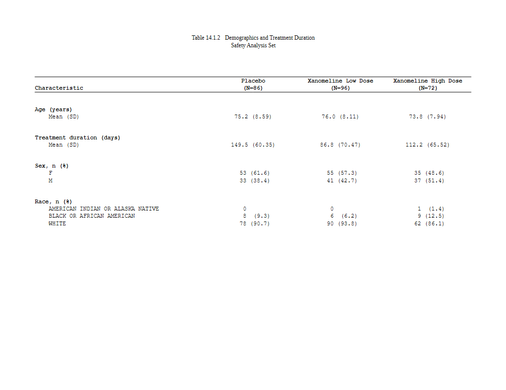
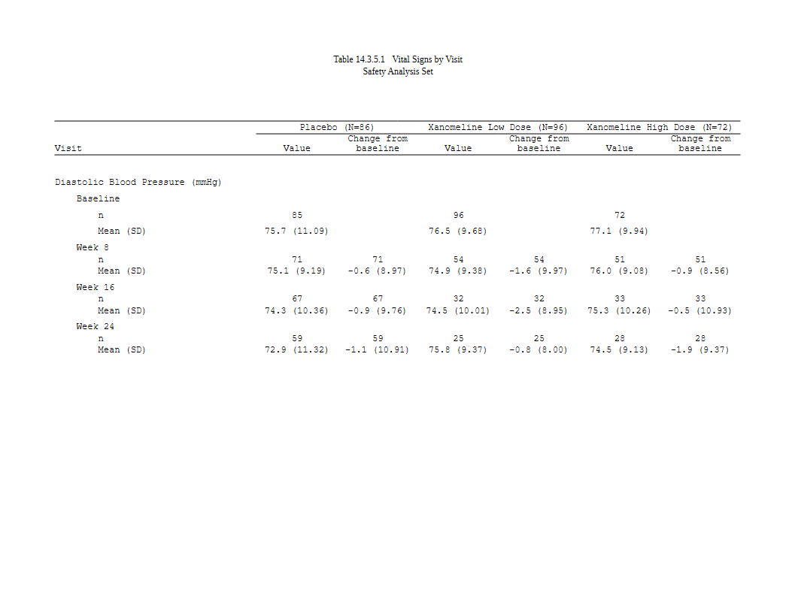

A plan is built from small declarations. Tables from an ARD walks through one table from start to finish. This article is the reference to keep open while you write your own: which verb says what, grouped by the job it does, with a short example of each.
Two rules hold for every verb:
-
Each verb has one job. Its arguments have the names
of the function that does that job:
widen_ard()for the cells,as_rtftables()for the pages,set_col_header()for the header. If you know those functions, you already know the arguments. - A later layer wins. A verb can be called more than once. For the same key, the last call decides, so a house style is written once and one table changes it by adding a line.
library(rtfreporter)
library(cards)
arms <- c("Placebo", "Xanomeline Low Dose", "Xanomeline High Dose")
adsl <- pharmaverseadam::adsl
adsl <- adsl[adsl$SAFFL == "Y", ]
adsl$TRT01A <- factor(adsl$TRT01A, levels = arms)
ard <- ard_stack(
adsl, .by = TRT01A,
ard_summary(variables = c(AGE, TRTDURD),
statistic = ~ continuous_summary_fns(
c("N", "mean", "sd", "median", "min", "max"))),
ard_tabulate(variables = c(SEX, RACE)))
base <- ard |>
normalize_ard() |>
table_plan(cols = "TRT01A", rows = c(group = "variable"))base has the roles and nothing else. Each section below
adds to it.
At a glance
| Job | Verb |
|---|---|
| The roles: what goes across, what goes down | table_plan(x, cols, rows, label, stat) |
| How a cell is made | plan_cells(..., stats, value, na, notes) |
| The digits | plan_digits(..., rounding) |
| The order and text of values |
plan_levels(), plan_labels()
|
| The row order | plan_sort(..., stat, keep) |
| The row headings | plan_stub(vars, name, indent, group_summary, before) |
| Groups down the body | plan_row_group(mode, collapse) |
| Blank rows | plan_blanks(where, first, last, counted) |
| Columns not printed | plan_hide(...) |
| The columns: widths, decimal alignment | plan_columns(widths, decimal, row_title, auto_width, sep) |
| The column header | plan_col_header(header, values) |
| The whole table’s look | plan_style(border, align_count_pct, font, ..., border_header, ...) |
| Some cells’ look | plan_cell_style(cols, header, where, bold, italic, align, color, background, border) |
| A page per value | plan_paginate_group(col, keep) |
| How many rows on a page | plan_paginate_rows(max_rows, split, break_before, min_group_rows, cont_label) |
| A table too wide for the page | plan_paginate_cols(at, cut_by, every, keep, col_header, fit, allow_span_break, order) |
| A listing | plan_listing(..., type, sep, spacer, spacer_rel_width, layout, wrap) |
| Titles and footnotes |
plan_titles(), plan_footnotes()
|
| Anything else | plan_after(...) |
| Run it, look inside |
plan_apply(plan, stage), plan_layers(),
print()
|
The cells
plan_cells(): templates
A template is text with {statistic} tokens.
{mean:.1f} has one decimal and {p:.1f%} is a
percentage. The shape of the value says how many rows it makes:
- one string: one row per record, labelled by the record (a category level);
- a named vector: one row per name, and the name is the row label;
- a vector with a guard,
condition ~ template: the first element that applies wins.
Entries are keyed by an analysis variable, by the kind of variable
(continuous, categorical) or left unnamed as
the default. The most specific key wins:
p <- base |>
plan_cells(
continuous = c("n" = "{N:.0f}",
"Mean (SD)" = "{mean:.1f} ({sd:.2f})",
"Median" = "{median:.1f}",
"Min, Max" = "{min:.1f}, {max:.1f}"),
categorical = c(n == 0 ~ "0", "{n:.0f} ({p:.1f%})"),
AGE = c("n" = "{N:.0f}", "Mean (SD)" = "{mean:.1f} ({sd:.2f})"),
notes = FALSE)
plan_apply(p, "table")[1:7, ]
#> group label Placebo Xanomeline Low Dose Xanomeline High Dose
#> 1 AGE n 86 96 72
#> 2 AGE Mean (SD) 75.2 (8.59) 76.0 (8.11) 73.8 (7.94)
#> 3 TRTDURD n 85 95 72
#> 4 TRTDURD Mean (SD) 149.5 (60.35) 86.8 (70.47) 112.2 (65.52)
#> 5 TRTDURD Median 182.0 63.0 96.5
#> 6 TRTDURD Min, Max 7.0, 210.0 1.0, 212.0 15.0, 200.0
#> 7 SEX F 53 (61.6) 55 (57.3) 35 (48.6)AGE has its own entry, so it shows two rows.
TRTDURD (treatment duration) uses the
continuous one.
stats = "rows" gives each statistic a row of its own,
labelled by the statistic, without templates. This is the shape of a PK
concentration table. na is the text for a cell with no
value. notes = FALSE turns off the message listing
statistics that no template used.
plan_digits(): the digits, as a house rule
A token that leaves its format open ({mean},
{p:%}) takes its digits from plan_digits().
The digits can be keyed by statistic and by variable, and a later call
wins, so a house rule and its exceptions are separate lines:
p <- base |>
plan_cells(continuous = c("Mean (SD)" = "{mean} ({sd})", "Median" = "{median}"),
categorical = "{n} ({p:%})", notes = FALSE) |>
plan_digits(continuous = c(mean = 1, sd = 2, median = 1),
categorical = c(p = 1)) |> # the house rule
plan_digits(TRTDURD = c(mean = 0, sd = 1)) # one variable
plan_apply(p, "table")[1:6, ]
#> group label Placebo Xanomeline Low Dose Xanomeline High Dose
#> 1 AGE Mean (SD) 75.2 (8.59) 76.0 (8.11) 73.8 (7.94)
#> 2 AGE Median 76.0 78.0 75.5
#> 3 TRTDURD Mean (SD) 150 (60.4) 87 (70.5) 112 (65.5)
#> 4 TRTDURD Median 182.0 63.0 96.5
#> 5 SEX F 53 (61.6) 55 (57.3) 35 (48.6)
#> 6 SEX M 33 (38.4) 41 (42.7) 37 (51.4)A token that sets its own format ({mean:.2f}) keeps it.
plan_digits(rounding = "sas") rounds halves away from zero
as SAS does. The default rounds as R does – or as
options(rtfreporter.rounding = ) says, the one rule every
formatter in the package shares. round_num() is that rule
on its own, for numbers you round yourself:
plan_levels() and plan_labels()
plan_levels() sets the order of a key’s values, or of a
variable’s levels. plan_labels() sets how a key’s values
print. Here that is the analysis variables’ names in the
group column. Both merge one key at a time, so a later call
adds an entry without repeating the others:
p <- base |>
plan_cells(continuous = c("Mean (SD)" = "{mean:.1f} ({sd:.2f})"),
categorical = "{n:.0f} ({p:.1f%})", notes = FALSE) |>
plan_labels(c(AGE = "Age (years)", TRTDURD = "Treatment duration (days)")) |>
plan_labels(c(SEX = "Sex", RACE = "Race")) |>
plan_levels(SEX = c("M", "F"))
plan_apply(p, "table")[, 1:3]
#> group label Placebo
#> 1 Age (years) Mean (SD) 75.2 (8.59)
#> 2 Treatment duration (days) Mean (SD) 149.5 (60.35)
#> 3 Sex M 33 (38.4)
#> 4 Sex F 53 (61.6)
#> 5 Race AMERICAN INDIAN OR ALASKA NATIVE 0 (0.0)
#> 6 Race BLACK OR AFRICAN AMERICAN 8 (9.3)
#> 7 Race WHITE 78 (90.7)When no plan_levels() gives an order for the
group column, the order of plan_labels()
becomes its order. So label every variable, in the order you want them.
A variable left out moves to the end.
plan_levels(.drop_empty = ) names variables whose levels
no subject has – n 0 in every column – and leaves those
rows out; a level some column counts stays. An ARD made after a code
list’s full set of levels was applied counts an unused value as 0, which
a table shows by default.
The text of a category level (F,
M) is the data’s. Recode it where the ARD is made, for
example as a factor’s labels, and the table prints what the ARD
holds.
plan_sort(): the row order
Rows keep the order the data and plan_levels() give
them. plan_sort() names keys to sort by, most important
first. A minus sign means descending, and a statistic name sorts by that
statistic summed across the columns. .overall is the “any
event” row and .depth a level’s own row before the rows
under it. The usual adverse-event order is “any event first, then each
SOC with its own row first and its PTs most frequent first”:
plan_sort(".overall", "SOC", ".depth", "-n", "PT")Keep a hierarchy’s outer key before the statistic. -n
alone orders every row by its count, and the PTs lose their SOC.
keep = FALSE also hides the columns used only for
sorting.
The rows
plan_stub(): the row headings
A demographics table usually prints the variable and its levels in
one indented column, the stub. plan_stub()
folds the row keys into it: name is the column’s name, and
indent the number of spaces for each level.
before = TRUE folds the stub before the table is
paginated, so that plan_cell_style(where = ) can see the
printed rows. Leave it FALSE (the default) when a page
split must still read a row key.
plan_row_group(), plan_blanks(),
plan_hide()
-
plan_row_group(mode = "indent")treats each heading and the rows under it as a group, so pagination keeps them together.collapse = TRUEprints a repeated value once. -
plan_blanks(where = "between_groups", first = TRUE, last = TRUE)adds a blank row between groups and at the top and bottom of the body. -
plan_hide("COL")keeps a column in the data but does not print it.
The columns and the header
plan_columns()
widths are relative. When they are named, a reordered
table keeps them, and .values stands for every value
column. decimal lines numbers up on the decimal point:
plan_columns(widths = c(row_label = 4, .values = 2), decimal = ".values")
plan_col_header()
The header is an ordinary rtf_col_header(), and its
cells can use tokens:
-
{col}: the column’s key value (the arm); with severalcolskeys,{col1},{col2}, … are the levels; -
{n}: the column’s population.values = list(n = TRUE)reads it from the ARD. Here that is the arm countsard_stack(.by = )wrote; -
{n:sum}: the total over the columns a cell spans, for a spanner.
A header row shorter than the table has its last cell repeated across the value columns, so the header does not need to know how many arms there are:
p_hdr <- base |>
plan_cells(continuous = c("Mean (SD)" = "{mean:.1f} ({sd:.2f})"),
categorical = "{n:.0f} ({p:.1f%})", notes = FALSE) |>
plan_stub(name = "row_label") |>
plan_col_header(values = list(n = TRUE), rtf_col_header(
list(col_cell(1, ""), col_cell(c(2, 4), "All arms (N={n:sum})")),
c("", "{col}"),
c("Characteristic", "(N={n})")))
p_hdr
#> <table_plan> from a normalized frame, 4 layers -> RTF pages
#> cols "TRT01A"
#> rows group = "variable"
#> 1. cells continuous, categorical
#> 2. cell_options notes
#> 3. stub name, before
#> 4. header header, values
#> in -- what cols / rows / label may name:
#> TRT01A, variable, variable_level, context, stat_name, stat_label,
#> stat, stat_fmt, .kind, .depth, .label, .label_order, group1,
#> group1_level, fmt_fun, warning, error
#> after widen -- not computed yet; run it once and this print fills in
#> header tokens -- what a plan_col_header() cell may carry:
#> {n} = c(Placebo = 86, Xanomeline Low Dose = 96, Xanomeline High Dose = 72)
#> {n:sum} = 254 over every column (less over a spanner: its own columns)
#> {n:Placebo} = 86
#> {n:Xanomeline Low Dose} = 96
#> {n:Xanomeline High Dose} = 72
#> rtf_tables(doc, x) renders it; plan_apply(x, "args") shows the callPrinting the plan lists every token and the value it will take, so
you can check a header before anything is run. If a population is not in
the ARD, the header prints NA and a warning says which
cells. Give the numbers yourself with
values = list(n = c(Placebo = 86, ...)).
The look
plan_style(): the whole table
plan_style() takes the whole-table settings
rtftable() and as_rtftables() have:
border, font_size_half_points,
row_height_twips, align_count_pct, and the
rules of each kind of row (border_header,
border_body, border_first_row, …).
plan_cell_style(): some cells
plan_cell_style() chooses cells with cols,
header or where, and says how they look. A
value applies to every chosen cell. A one-sided formula
is computed row by row, and NA leaves a cell as it is:
p_style <- base |>
plan_cells(continuous = c("Mean (SD)" = "{mean:.1f} ({sd:.2f})"),
categorical = "{n:.0f} ({p:.1f%})", notes = FALSE) |>
plan_labels(c(AGE = "Age (years)", TRTDURD = "Treatment duration (days)",
SEX = "Sex, n (%)",
RACE = "Race, n (%)")) |>
plan_stub(name = "row_label", before = TRUE) |>
plan_blanks(where = "between_groups", first = TRUE, last = TRUE) |>
plan_columns(widths = c(row_label = 4, .values = 2)) |>
plan_style(border = "tfl", align_count_pct = TRUE) |>
plan_cell_style(header = TRUE, bold = TRUE) |>
plan_cell_style(cols = "row_label", bold = ~ is.na(Placebo)) |> # the headings
plan_col_header(values = list(n = TRUE), rtf_col_header(
c("", "{col}"),
c("Characteristic", "(N={n})")))
doc <- rtf_document() |>
rtf_section(secinfo = list(header = rtf_header(list(
c(c = "Table 14.1.2 Demographics and Treatment Duration"),
c(c = "Safety Analysis Set"), c(c = ""))))) |>
rtf_tables(p_style)
generate_rtfreport(doc, "t_style.rtf", overwrite = TRUE)
The heading rows are the ones with no numbers, so
is.na(Placebo) picks them. The formula can see the heading
rows only because the stub is folded first (before = TRUE).
Without that, they do not exist yet when the styles are worked out.
Pages
Three verbs cover the three directions in which a table can split into pages:
-
by value:
plan_paginate_group(col)starts a new page for each value of a column (a lab parameter, a visit). Left out,colis the outermost row key. The page is named after the value, which is whatrtf_tables(auto_section = TRUE)starts a section on. -
by rows:
plan_paginate_rows(max_rows, split = "group_safe")sets how many rows fit on a page and keeps groups whole. -
by columns:
plan_paginate_cols(every = 4, keep = "row_label")splits a table too wide for the page into blocks. Each block repeats thekeepcolumns.
A vital signs table with a page per parameter, and two columns (value and change from baseline) under each arm:
visits <- c("Baseline", "Week 8", "Week 16", "Week 24")
advs <- pharmaverseadam::advs
advs <- advs[advs$PARAMCD %in% c("SYSBP", "DIABP") &
advs$ATPT %in% "AFTER LYING DOWN FOR 5 MINUTES" &
(advs$ABLFL %in% "Y" | advs$ANL01FL %in% "Y") &
advs$AVISIT %in% visits & advs$USUBJID %in% adsl$USUBJID, ]
advs$TRTA <- factor(advs$TRT01A, levels = arms)
advs$AVISIT <- factor(advs$AVISIT, levels = visits)
stats <- ~ continuous_summary_fns(c("N", "mean", "sd"))
ard_vs <- bind_ard(
ard_summary(advs, by = c(PARAM, AVISIT, TRTA), variables = AVAL,
statistic = stats),
ard_summary(droplevels(advs[advs$AVISIT != "Baseline", ]),
by = c(PARAM, AVISIT, TRTA), variables = CHG,
statistic = stats))
p_vs <- ard_vs |>
normalize_ard() |>
table_plan(cols = c("TRTA", "variable"),
rows = c(PARAM = "PARAM", Visit = "AVISIT")) |>
plan_levels(variable = c("AVAL", "CHG")) |>
plan_cells(continuous = c("n" = "{N:.0f}", "Mean (SD)" = "{mean:.1f} ({sd:.2f})"),
na = "", notes = FALSE) |>
plan_stub(name = "Visit") |>
plan_paginate_group() |> # a page per parameter
plan_blanks(where = "between_groups", first = TRUE, last = TRUE) |>
plan_columns(widths = c(5, rep(2, 6))) |>
plan_style(border = "tfl") |>
plan_col_header(values = list(n = c(table(adsl$TRT01A))), rtf_col_header(
c(list(col_cell(1, "")),
lapply(1:3, function(i) col_cell(c(2 * i, 2 * i + 1), "{col1} (N={n})"))),
c("Visit", rep(c("Value", "Change from\nbaseline"), 3))))
doc <- rtf_document(page = rtf_page(orientation = "landscape")) |>
rtf_section(secinfo = list(header = rtf_header(list(
c(c = "Table 14.3.5.1 Vital Signs by Visit"),
c(c = "Safety Analysis Set"), c(c = ""))))) |>
rtf_tables(p_vs)
generate_rtfreport(doc, "t_vs.rtf", overwrite = TRUE)
length(plan_apply(p_vs))
#> [1] 2
Here the arm counts come from ADSL
(values = list(n = ...)), because the columns are arm ×
variable and the vital-signs ARD does not state the arms’
populations.
Titles, footnotes, and the way out
plan_titles() and plan_footnotes() put the
same block on every page. With pages =, you give one block
for each page instead. Titles are often shared by a whole report and set
in the running header, as in the examples above. These verbs are for the
text that belongs to one table.
plan_after(function(pages) ...) runs your own functions
on the finished pages. It is for what no verb declares. Prefer a verb
when there is one: a declaration names columns and so survives a
reordered table, while a function written against positions does not. A
plan written with verbs alone can also be saved to a table spec by
tflspec; a plan_after() step cannot.
Looking inside
-
print(plan): the layers, the column names the roles may use, and the header tokens with their values. -
plan_apply(plan, stage = ):"input"is the frame going in,"table"the table data frame,"args"the calls the plan resolves to (without running them),"pages"the pages. -
plan_layers(plan): the plan read back, layer by layer.
stage = "args" answers “which of my lines decided
this?”. It shows the argument lists after every layer has been
merged:
a <- plan_apply(p_vs, "args")
names(a)
#> [1] "widen" "rtf"
str(a$rtf[c("split", "blank_rows", "blank_row_first", "blank_row_end")])
#> List of 4
#> $ split : chr "by_value"
#> $ blank_rows : chr "between_groups"
#> $ blank_row_first: logi TRUE
#> $ blank_row_end : logi TRUE